DB-SE-AE · D.3 Coeficientes de presión exterior · versión 2009-04 · capa oficial
Formatos: JSON compacto · Markdown · PDF fuente
Ámbito del documento · texto del ámbito · documento y tablas
ID técnico a0042 · PDF pág. 28-45 · jerarquía no validada por persona · contrastado con el literal de la página 28 (candidato tipográfico); no validado por persona · padre: raíz
D.3 Coeficientes de presión exterior 1 Los coeficientes de presión exterior o eólico, cp, dependen de la dirección relativa del viento, de la forma del edificio, de la posición de elemento considerado y de su área de influencia. 2 En las tablas D.3 a D.13 se dan valores de coeficientes de presión para diversas formas simples de construcciones, obtenidos como el pésimo de entre los del abanico de direcciones de viento defini- das en cada caso. En todas ellas la variable A se refiere al área de influencia del elemento o punto considerado. El signo “ indica que el valor es idéntico al de la casilla superior. Cuando se aportan dos valores de distinto signo separados, significa que la acción de viento en la zona considerada puede variar de presión a succión, y que deben considerarse las dos posibilidades. En todas las ta- blas puede interpolarse linealmente para valores intermedios de las variables. Los valores nulos se ofrecen para poder interpolar. 3 Para comprobaciones locales de elementos de fachada o cubierta, el área de influencia será la del propio elemento. Para comprobaciones de elementos estructurales subyacentes, el área de asigna- ción de carga. Si la zona tributaria del elemento se desarrolla en dos o más zonas de las estableci- das en las tablas, como es el caso de análisis de elementos estructurales generales, el uso de los coeficientes tabulados opera del lado de la seguridad, toda vez que no representan valores simultá- neos de la acción de viento. 4 Para elementos con área de influencia A, entre 1 m2 y 10 m2, el coeficiente de presión exterior se puede obtener mediante la siguiente expresión: cpe,A = cpe,1 +(cpe,10 – cpe,1)· log10A (D.4) siendo: cpe,10 coeficiente de presión exterior para elementos con un área de influencia A ≥ 10 m2 cpe,1 coeficiente de presión exterior para elementos con un área de influencia A ≤ 1 m2 Documento Básico SE-AE Acciones en la edificación SE-AE 25 5 En caso de construcciones con forma diferente de las aquí establecidas, deberá procederse por analogía, considerando, si es preciso, que el volumen está formado por la construcción considerada y las medianeras. 6 Se permite el empleo de las tablas de coeficientes de presión de la norma EN 1991-1-4, tanto para las formas canónicas no incluidas en este Documento Básico como para los coeficientes globales de fuerza de las que sí están incluidas. Tabla D.3 Paramentos verticales Zona (según figura), -45º < θ < 45º A (m2) h/d A B C D E ≥ 10 5 -1,2 -0,8 -0,5 0,8 -0,7 1 “ “ “ “ -0,5 ≤ 0,25 “ “ 0,7 -0,3 5 5 -1,3 -0,9 -0,5 0,9 -0,7 1 “ “ “ “ -0,5 ≤ 0,25 “ “ “ 0,8 -0,3 2 5 -1,3 -1,0 -0,5 0,9 -0,7 1 “ “ ·” “ -0,5 ≤ 0,25 “ “ “ 0,7 -0,3 ≤ 1 5 -1,4 -1,1 -0,5 1,0 -0,7 1 “ “ “ “ -0,5 ≤ 0,25 “ “ “ “ -0,3 Documento Básico SE-AE Acciones en la edificación SE-AE 26 Tabla D.4 Cubiertas planas Zona (según figura), -45º < θ < 45º hp/h A (m2) F G H I 0,2 ≥ 10 -1,8 -1,2 -0,7 -0,2 0,2 Bordes con aristas ≤ 1 -2,5 -2,0 -1,2 -0,2 0,2 ≥ 10 -1,6 -1,1 -0,7 -0,2 0,2 0,025 ≤ 1 -2,2 -1,8 -1,2 -0,2 0,2 ≥ 10 -1,4 -0,9 -0,7 -0,2 0,2 0,05 ≤ 1 -2,0 -1,6 -1,2 -0,2 0,2 ≥ 10 -1,2 -0,8 -0,7 -0,2 0,2 Con parapetos 0,10 ≤ 1 -1,8 -1,4 -1,2 -0,2 Nota: Se considerarán cubiertas planas aquellas con una pendiente no superior a 5º Documento Básico SE-AE Acciones en la edificación SE-AE 27 Tabla D.5 Cubiertas a un agua. a) Dirección del viento -45º ≤ θ ≤ 45º Zona (según figura), -45º < θ < 45 Pendiente de la cubierta α A (m2) F G H -1,7 -1,2 -0,6 ≥ 10 +0,0 +0,0 +0,0 -2,5 -2,0 -1,2 5º ≤ 1 +0,0 +0,0 +0,0 -0,9 -0,8 -0,3 ≥ 10 0,2 0,2 0,2 -2,0 -1,5 -0,3 15º ≤ 1 0,2 0,2 0,2 -0,5 -0,5 -0,2 ≥ 10 0,7 0,7 0,4 -1,5 -1,5 -0,2 30º ≤ 1 0,7 0,7 0,4 -0,0 -0,0 -0,0 ≥ 10 0,7 0,7 0,6 -0,0 -0,0 -0,0 45º ≤ 1 0,7 0,7 0,6 ≥ 10 0,7 0,7 0,7 60º ≤ 1 0,7 0,7 0,7 ≥ 10 0,8 0,8 0,8 75º ≤ 1 0,8 0,8 0,8 Documento Básico SE-AE Acciones en la edificación SE-AE 28 b) Dirección del viento 135º ≤ θ ≤ 225º Zona (según figura), 135º ≤ θ ≤ 225º Pendiente de la cubierta α A (m2) F G H ≥ 10 -2,3 -1,3 -0,8 5º ≤ 1 -2,5 -2,0 -1,2 ≥ 10 -2,5 -1,3 -0,9 15º ≤ 1 -2,8 -2,0 -1,2 ≥ 10 -1,1 -0,8 -0,8 30º ≤ 1 -2,3 -1,5 -0,8 ≥ 10 -0,6 -0,5 -0,7 45º ≤ 1 -1,3 -0,5 -0,7 ≥ 10 -0,5 -0,5 -0,5 60º ≤ 1 -1,0 -0,5 -0,5 ≥ 10 -0,5 -0,5 -0,5 75º ≤ 1 -1,0 -0,5 -0,5 Documento Básico SE-AE Acciones en la edificación SE-AE 29 c) Dirección del viento 45º ≤ θ ≤ 135º Zona (según figura), 45º ≤ θ ≤ 135º Pendiente de la cubierta α A (m2) Finf Fsup G H I ≥ 10 -2,1 -2,1 -1,8 -0,6 -0,5 5º ≤ 1 -2,4 -2,6 -2,0 -1,2 -0,5 ≥ 10 -1,6 -2,4 -1,9 -0,8 -0,7 15º ≤ 1 -2,4 2,9 -2,5 -1,2 -1,2 ≥ 10 -1,3 -2,1 -1,5 -1,0 -0,8 30º ≤ 1 -2,0 -2,9 -2,0 -1,3 -1,2 ≥ 10 -1,3 -1,5 -1,4 -1,0 -0,9 45º ≤ 1 -2,0 -2,4 -2,0 -1,3 -1,2 ≥ 10 -1,2 -1,2 -1,2 -1,0 -0,7 60º ≤ 1 -2,0 -2,0 -2,0 -1,3 -1,2 ≥ 10 -1,2 -1,2 -1,2 -1,0 -0,5 75º ≤ 1 -2,0 -2,0 -2,0 -1,3 -0,5 Documento Básico SE-AE Acciones en la edificación SE-AE 30 Tabla D.6 Cubiertas a dos aguas a) Dirección del viento -45º ≤ θ ≤ 45º Zona (según figura) Pendiente de la cubierta α A (m2) F G H I J ≥ 10 -0,6 -0,6 -0,8 -0,7 -1 -45º ≤ 1 -0,6 -0,6 -0,8 -0,7 -1,5 ≥ 10 -1,1 -0,8 -0,8 -0,6 -0,8 -30º ≤ 1 -2 -1,5 -0,8 -0,6 -1,4 ≥ 10 -2,5 -1,3 -0,9 -0,5 -0,7 -15º ≤ 1 -2,8 -2 -1,2 -0,5 -1,2 0,2 0,2 ≥ 10 -2,3 -1,2 -0,8 -0,6 -0,6 0,2 0,2 -5º ≤ 1 -2,5 -2 -1,2 -0,6 -0,6 -1,7 -1,2 -0,6 0,2 ≥ 10 +0,0 +0,0 +0,0 -0,6 -0,6 -2,5 -2 -1,2 0,2 5º ≤ 1 +0,0 +0,0 +0,0 -0,6 -0,6 -0,9 -0,8 -0,3 -0,4 -1 ≥ 10 0,2 0,2 0,2 +0,0 +0,0 -2 -1,5 -0,3 -0,4 -1,5 15º ≤ 1 0,2 0,2 0,2 +0,0 +0,0 -0,5 -0,5 -0,2 -0,4 -0,5 ≥ 10 0,7 0,7 0,4 0 0 -1,5 -1,5 -0,2 -0,4 -0,5 30º ≤ 1 0,7 0,7 0,4 0 0 -0,0 -0,0 -0,0 -0,2 -0,3 ≥ 10 0,7 0,7 0,6 +0,0 +0,0 -0,0 -0,0 -0,0 -0,2 -0,3 45º ≤ 1 0,7 0,7 0,6 +0,0 +0,0 ≥ 10 0,7 0,7 0,7 -0,2 -0,3 60º ≤ 1 0,7 0,7 0,7 -0,2 -0,3 ≥ 10 0,8 0,8 0,8 -0,2 -0,3 75º ≤ 1 0,8 0,8 0,8 -0,2 -0,3 Documento Básico SE-AE Acciones en la edificación SE-AE 31 b) Dirección del viento 45º ≤ θ ≤ 135º Zona (según figura), -45º ≤ θ ≤ 45º Pendiente de la cubierta α A (m2) F G H I ≥ 10 -1,4 -1,2 -1,0 -0,9 -45º ≤ 1 -2,0 -2,0 -1,3 -1,2 ≥ 10 -1,5 -1,2 -1,0 -0,9 -30º ≤ 1 -2,1 -2,0 -1,3 -1,2 ≥ 10 -1,9 -1,2 -0,8 -0,8 -15º ≤ 1 -2,5 -2,0 -1,2 -1,2 ≥ 10 -1,8 -1,2 -0,7 -0,6 -5º ≤ 1 -2,5 -2,0 -1,2 -1,2 ≥ 10 -1,6 -1,3 -0,7 -0,6 5º ≤ 1 -2,2 -2,0 -1,2 -0,6 ≥ 10 -1,3 -1,3 -0,6 -0,5 15º ≤ 1 -2,0 -2,0 -1,2 -0,5 ≥ 10 -1,1 -1,4 -0,8 -0,5 30º ≤ 1 -1,5 -2,0 -1,2 -0,5 ≥ 10 -1,1 -1,4 -0,9 -0,5 45º ≤ 1 -1,5 -2,0 -1,2 -0,5 ≥ 10 -1,1 -1,2 -0,8 -0,5 60º ≤ 1 -1,5 -2,0 -1,0 -0,5 ≥ 10 -1,1 -1,2 -0,8 -0,5 75º ≤ 1 -1,5 -2,0 -1,0 -0,5 Nota: - No se deben mezclar valores positivos y negativos en una sola cara. Documento Básico SE-AE Acciones en la edificación SE-AE 32 Tabla D.7 Cubiertas a cuatro aguas Zona (según figura) Pendiente de la cubier- ta α A (m2) F G H I J K L M N -1,7 -1,2 -0,6 ≥ 10 +0,0 +0,0 +0,0 -0,3 -0,6 -0,6 -1,2 -0,6 -0,4 -2,5 -2,0 -1,2 5º ≤ 1 +0,0 +0,0 +0,0 -0,3 -0,6 -0,6 -2,0 -1,2 -0,4 -0,9 -0,8 -0,3 ≥ 10 +0,2 +0,2 +0,2 -0,5 -1,0 -1,2 -1,4 -0,6 -0,3 -2,0 -1,5 -0,3 15º ≤ 1 +0,2 +0,2 +0,2 -0,5 -1,5 -2,0 -2,0 -1,2 -0,3 -0,5 -0,5 -0,2 ≥ 10 +0,5 +0,7 +0,4 -0,4 -0,7 -0,5 -1,4 -0,8 -0,2 -1,5 -1,5 -0,2 30º ≤ 1 +0,5 +0,7 +0,4 -0,4 -1,2 -0,5 -2,0 -1,2 -0,2 -0,0 -0,0 -0,0 ≥ 10 +0,7 +0,7 +0,6 -0,3 -0,6 -0,3 -1,3 -0,8 -0,2 -0,0 -0,0 -0,0 45º ≤ 1 +0,7 +0,7 +0,6 -0,3 -0,6 -0,3 -2,0 -1,2 -0,2 ≥ 10 +0,7 +0,7 +0,7 -0,3 -0,6 -0,3 -1,2 -0,4 -0,2 60º ≤ 1 +0,7 +0,7 +0,7 -0,3 -0,6 -0,3 -2,0 -0,4 -0,2 ≥ 10 +0,8 +0,8 +0,8 -0,3 -0,6 -0,3 -1,2 -0,4 -0,2 75º ≤ 1 +0,8 +0,8 +0,8 -0,3 -0,6 -0,3 -2,0 -0,4 -0,2 Nota: - La pendiente de la cubierta a barlovento resulta dominante para los coeficientes de presión. Documento Básico SE-AE Acciones en la edificación SE-AE 33 Tabla D.8 Cubiertas en diente de sierra a) Dirección del viento -45º ≤ θ ≤ 45º b) Dirección del viento -45º ≤ θ ≤ 45º Notas: -Los coeficientes de presión para cada faldón se podrán tomar de la tabla relativa a cubierta a un agua, mo- dificándolos de acuerdo con las indicaciones de las figuras a) y b) anteriores. -En el caso de la figura b) se deberán considerar dos situaciones. En la primera el viento ejerce una presión sobre la cubierta del primer faldón a barlovento, y en la segunda la misma cubierta está sometida a una succión del viento. Documento Básico SE-AE Acciones en la edificación SE-AE 34 Tabla D.9 Cubiertas múltiples Dirección del viento -45º ≤θ≤ 45º Notas: -Los coeficientes de presión para cada par de faldones se podrán tomar de la tabla relativa a cubiertas a dos aguas, modificándolos de acuerdo con las indicaciones de las figuras a) y b) anteriores. -En el caso de la figura a) los coeficientes de presión cpe correspondientes a los módulos extremos se podrán tomar de la tabla relativa a cubiertas a un agua. Documento Básico SE-AE Acciones en la edificación SE-AE 35 Tabla D.10 Marquesinas a un agua Coeficientes de presión exterior cρ,10 Zona (según figura) Pendiente de la cubierta α Efecto del viento hacia Factor de obstrucción ϕ A B C Abajo 0 ≤ ϕ≤ 1 0,5 1,8 1,1 Arriba 0 -0,6 -1,3 -1,4 0º Arriba 1 -1,5 -1,8 -2,2 Abajo 0 ≤ ϕ≤ 1 0,8 2,1 1,3 Arriba 0 -1,1 -1,7 -1,8 5º Arriba 1 -1,6 -2,2 -2,5 Abajo 0 ≤ ϕ≤ 1 1,2 2,4 1,6 Arriba 0 -1,5 -2,0 -2,1 10º Arriba 1 -2,1 -2,6 -2,7 Abajo 0 ≤ ϕ≤ 1 1,4 2,7 1,8 Arriba 0 -1,8 -2,4 -2,5 15º Arriba 1 -1,6 -2,9 -3,0 Abajo 0 ≤ ϕ≤ 1 1,7 2,9 2,1 Arriba 0 -2,2 -2,8 -2,9 20º Arriba 1 -1,6 -2,9 -3,0 Abajo 0 ≤ ϕ≤ 1 2,0 3,1 2,3 Arriba 0 -2,6 -3,2 -3,2 25º Arriba 1 -1,5 -2,5 -2,8 Abajo 0 ≤ ϕ≤ 1 2,2 3,2 2,4 Arriba 0 -3,0 -3,8 -3,6 30º Arriba 1 -1,5 -2,2 -2,7 Notas: -El grado de obstrucción del flujo del viento por debajo de una marquesina se caracteriza mediante el factor de obstrucción, ϕ, definido como la relación entre el área obstruida y el área de la sección total bajo la mar- quesina. Ambas áreas se consideran en un plano perpendicular a la dirección del viento. Documento Básico SE-AE Acciones en la edificación SE-AE 36 -Los coeficientes de presión tienen en cuenta los efectos del viento actuando sobre ambas superficies, la su- perior y la inferior. Un valor negativo del coeficiente indica que la acción del viento tiende a levantar la mar- quesina, y un valor positivo lo contrario. Por regla general, a efectos del dimensionado de las marquesinas se deberán considerar ambas situaciones. -Los coeficientes de presión representan la máxima presión localizada sobre un área de por lo menos 10 m2. Los coeficientes de presión se podrán emplear en el dimensionado de los elementos de cobertura y de sus fijaciones. -A efectos del dimensionado de la estructura, la resultante de la acción del viento se supondrá actuando a una distancia de d/4, medida desde el borde de barlovento. -A sotavento del punto de máximo bloqueo, se emplearán los valores de los coeficientes de presión exterior correspondientes a un factor de obstrucción ϕ=0. Documento Básico SE-AE Acciones en la edificación SE-AE 37 Tabla D.11 Marquesinas a dos aguas Coeficientes de presión cρ,10 Zona (según figura) Pendiente de la cubier- ta α Efecto del viento hacia Factor de obstrucción ϕ A B C D Abajo 0 ≤ ϕ≤ 1 0,8 1,6 0,6 1,7 Arriba 0 -0,9 -1,3 -1,6 -0,6 -20º Arriba 1 -1,5 -2,4 -2,4 -0,6 Abajo 0 ≤ ϕ≤ 1 0,6 1,5 0,7 1,4 Arriba 0 -0,8 -1,3 -1,6 -0,6 -15º Arriba 1 -1,6 -2,7 -2,6 -0,6 Abajo 0 ≤ ϕ≤ 1 0,6 1,4 0,8 1,1 Arriba 0 -0,8 -1,3 -1,5 -0,6 -10º Arriba 1 -1,6 -2,7 -2,6 -0,6 Abajo 0 ≤ ϕ≤ 1 0,5 1,5 0,8 0,8 Arriba 0 -0,7 -1,3 -1,6 -0,6 -5º Arriba 1 -1,5 -2,4 -2,4 -0,6 Abajo 0 ≤ ϕ≤ 1 0,6 1,8 1,3 0,4 Arriba 0 -0,6 -1,4 -1,4 -1,1 5º Arriba 1 -1,3 -2,0 -1,8 -1,5 Abajo 0 ≤ ϕ≤ 1 0,7 1,8 1,4 0,4 Arriba 0 -0,7 -1,5 -1,4 -1,4 10º Arriba 1 -1,3 -2,0 -1,8 -1,8 Abajo 0 ≤ ϕ≤ 1 0,9 1,9 1,4 0,4 Arriba 0 -0,9 -1,7 -1,4 -1,8 15º Arriba 1 -1,3 -2,2 -1,6 -2,1 Abajo 0 ≤ ϕ≤ 1 1,1 1,9 1,5 0,4 Arriba 0 -1,2 -1,8 -1,4 -2,0 20º Arriba 1 -1,4 -2,2 -1,6 -2,1 Abajo 0 ≤ ϕ≤ 1 1,2 1,9 1,6 0,5 Arriba 0 -1,4 -1,9 -1,4 -2,0 25º Arriba 1 -1,4 -2,0 -1,5 -2,0 Abajo 0 ≤ ϕ≤ 1 1,3 1,9 1,6 0,7 Arriba 0 -1,4 -1,9 -1,4 -2,0 30º Arriba 1 -1,4 -1,8 -1,4 -2,0 Documento Básico SE-AE Acciones en la edificación SE-AE 38 Notas: -El grado de obstrucción del flujo del viento por debajo de una marquesina se caracteriza mediante el factor de obstrucción, ϕ, definido como la relación entre el área obstruida y el área de la sección total bajo la mar- quesina. Ambas áreas se consideran en un plano perpendicular a la dirección del viento. - Los coeficientes de presión tienen en cuenta los efectos del viento actuando sobre ambas superficies, la superior y la inferior. Un valor negativo del coeficiente indica que la acción del viento tiende a levantar la marquesina, y un valor positivo lo contrario. Por regla general, a efectos del dimensionado de las marquesi- nas se deberán considerar ambas situaciones. -Los coeficientes de presión, cρ,10, representan la máxima presión localizada sobre un área de por lo menos 10 m2. Los coeficientes de presión, cρ,10, se podrán emplear en el dimensionado de los elementos de cober- tura y de sus fijaciones. -A efectos del dimensionado de la estructura, la resultante de la acción del viento sobre cada uno de los fal- dones se admitirá actuando en su centro. Además, se considerará también la situación en la que el viento actúa únicamente sobre uno de los dos faldones. -Para factores de obstrucción con 0<ϕ<1, los coeficientes de sustentación y de fuerza se podrán determinar mediante interpolación lineal. -A sotavento del punto de máxima obstrucción, se emplearán los valores de los coeficientes de sustentación correspondientes a un factor de obstrucción ϕ=0. Documento Básico SE-AE Acciones en la edificación SE-AE 39 Tabla D.12 Cubiertas cilíndricas Notas: -Para 0 < g/d < 0,5, el coeficiente de presión exterior, cpe,10, correspondiente a la superficie A, se obtendrá mediante interpolación lineal. -Para 0,2 ≤ f/d ≤ 0,3 y g/d ≥ 0,5, se adoptará el más desfavorable de los dos posibles valores del coeficiente de presión exterior, cpe,10, correspondiente a la zona A. Documento Básico SE-AE Acciones en la edificación SE-AE 40 Tabla D.13 Cubiertas esféricas Notas: -cpe,10 es constante a lo largo de cada uno de los arcos del círculo de intersección entre la esfera y los planos perpendiculares a la dirección del viento. -Los valores de cpe,10 a lo largo de los arcos de circunferencia paralelos a la dirección del viento se podrán determinar mediante interpolación lineal ente los valores en A, B, C. -Para 0<g/d<1 el coeficiente de presión exterior en A se obtendrá mediante interpolación lineal entre los valo- res indicados en la figura. -Para 0<g/d<0,5, los coeficientes de presión exterior en B y C se obtendrán mediante interpolación lineal en- tre los valores indicados en la figura. Documento Básico SE-AE Acciones en la edificación SE-AE 41
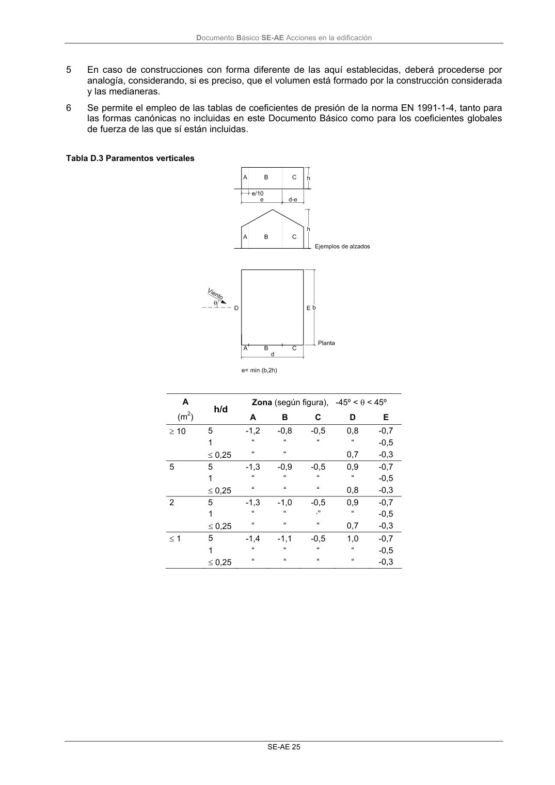


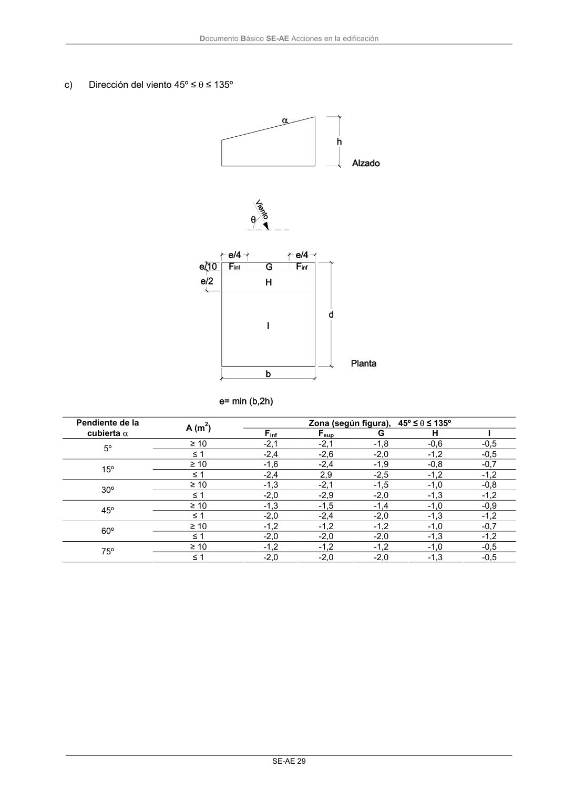
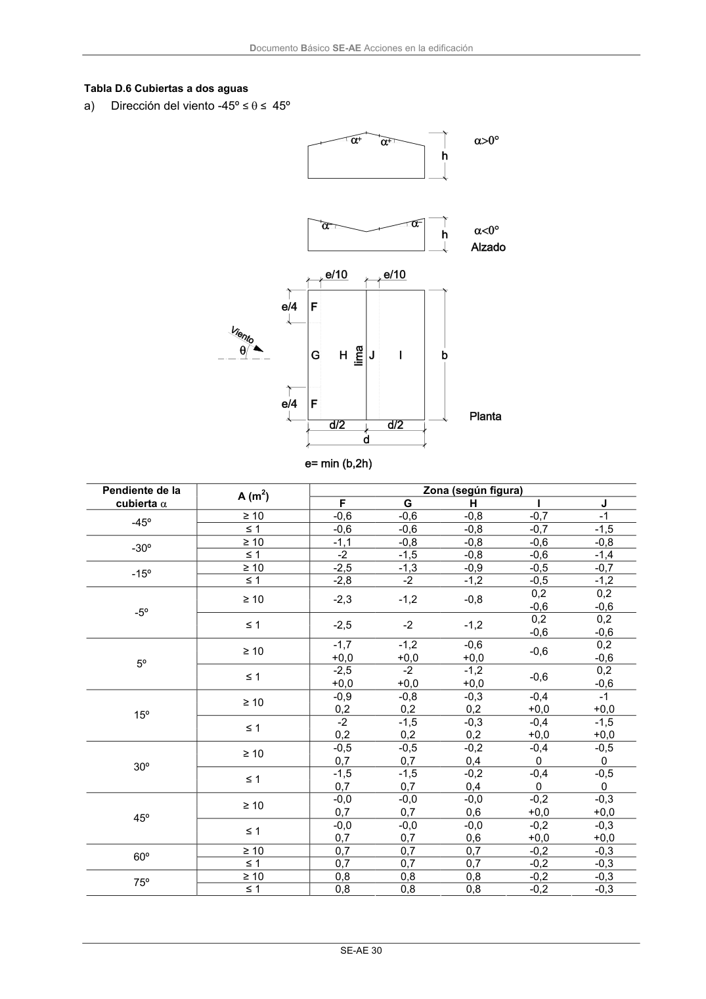

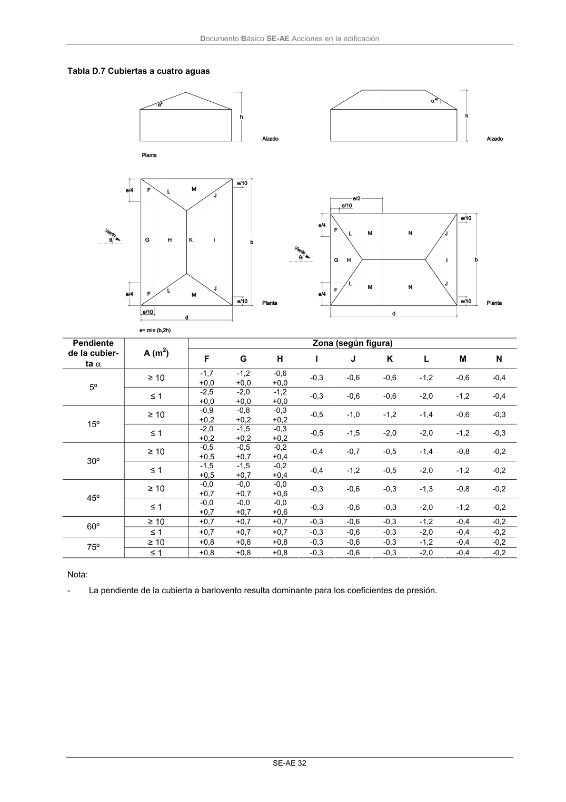
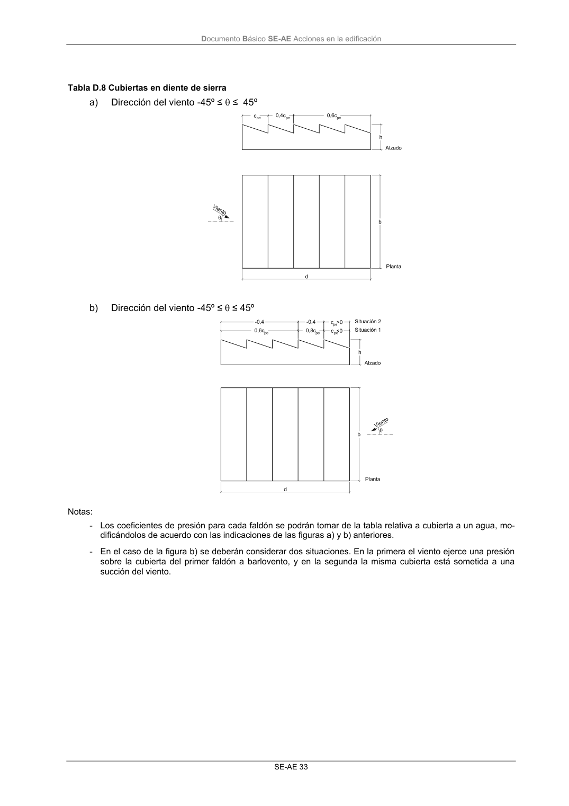
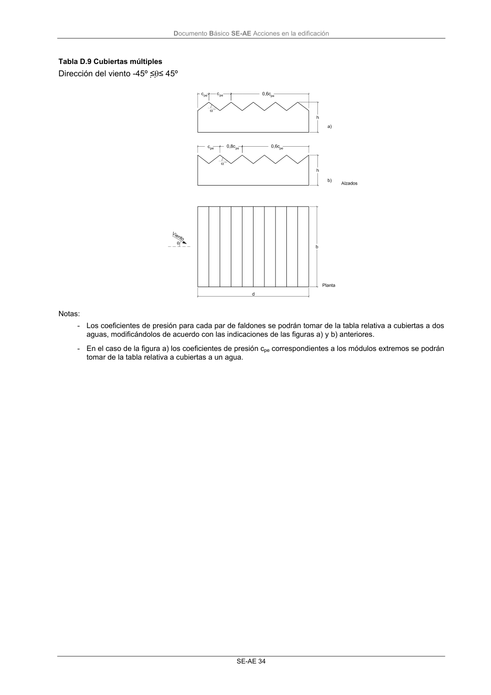
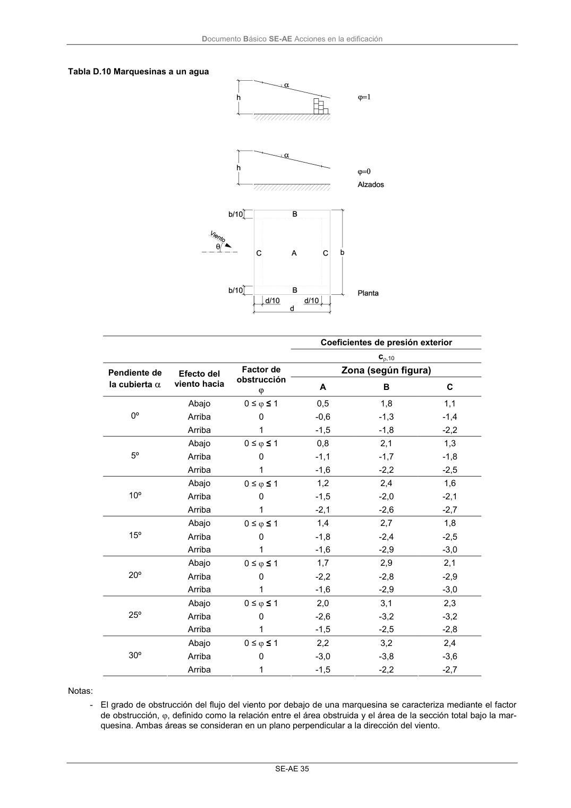
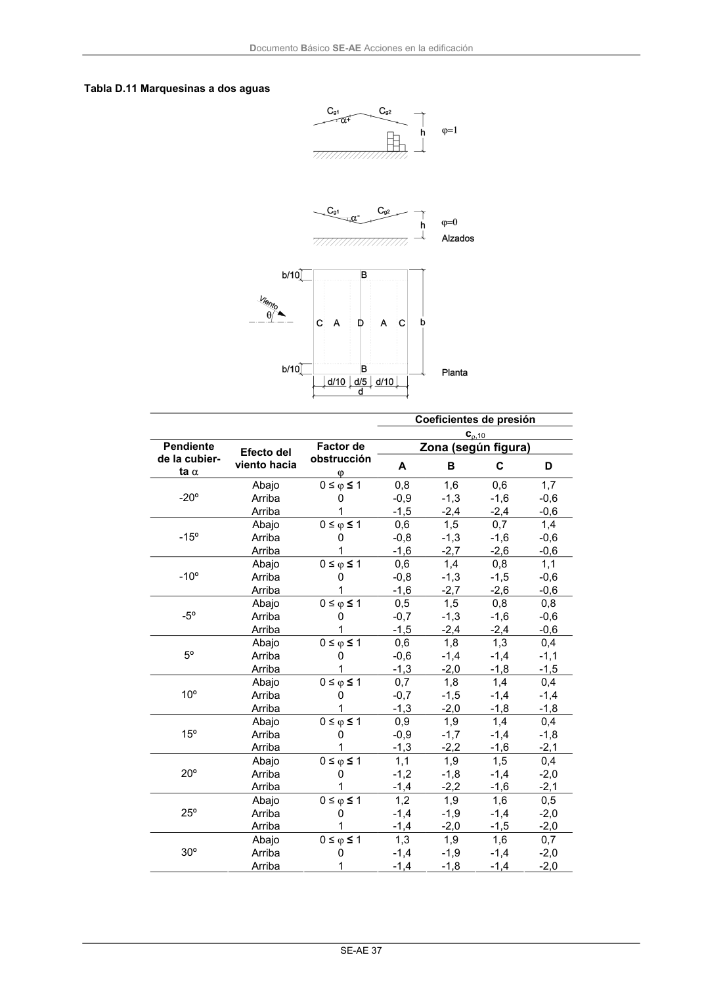
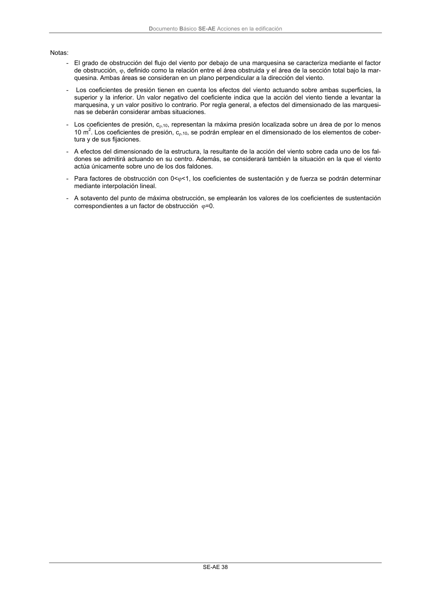
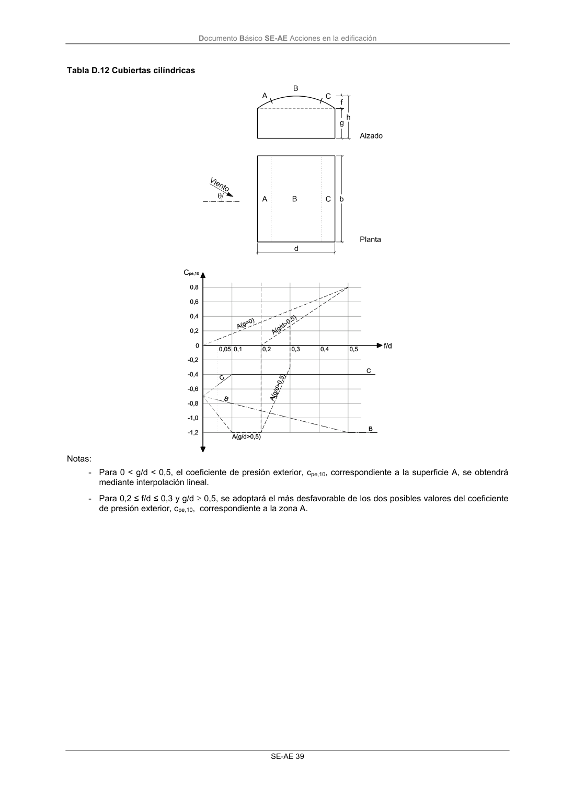
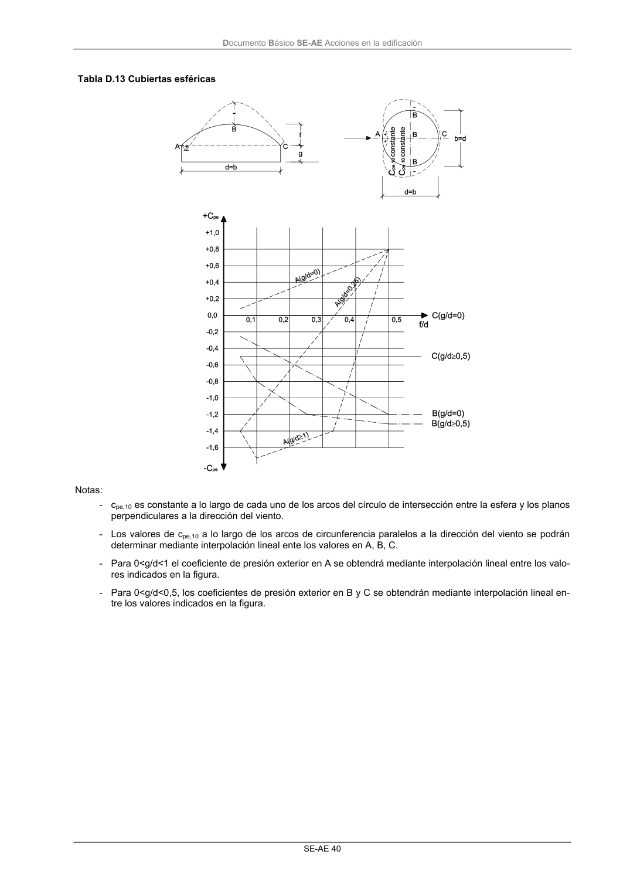

PDF fuente redistribuible: copia fiel enlazada en esta página (SHA256 verificado).